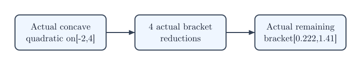
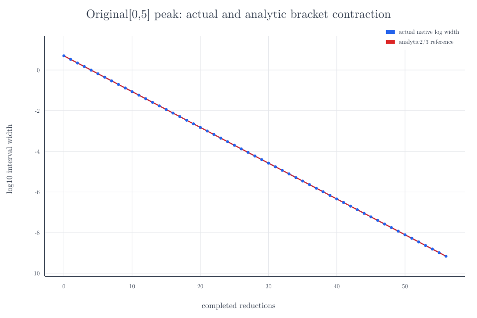
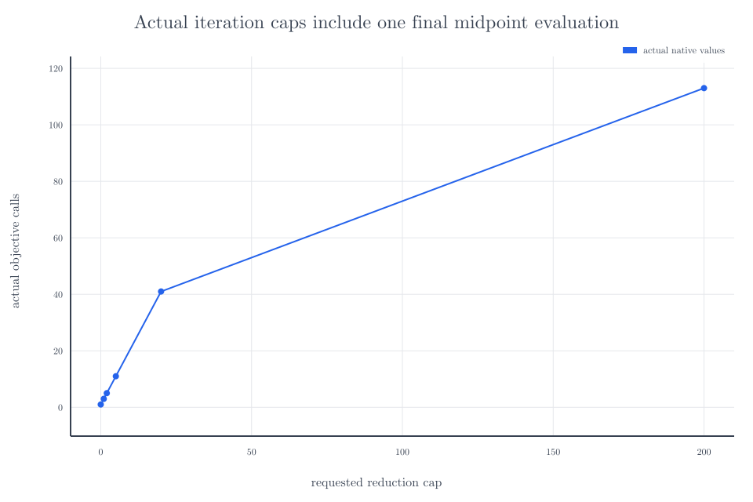
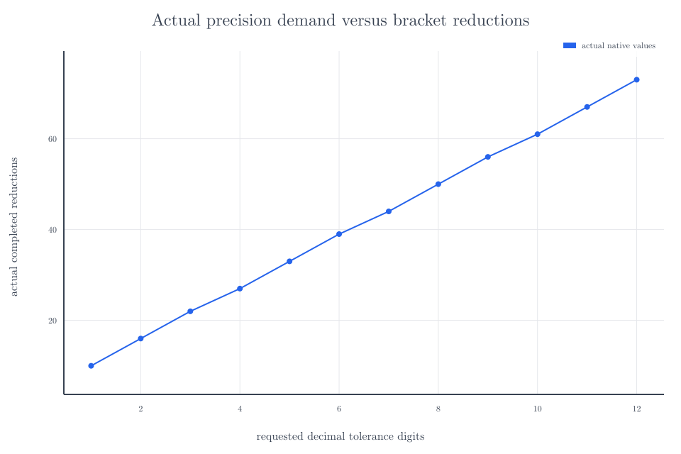

Ternary search: actual sampled brackets and explicit termination
Abstract
Under strict unimodality, comparing two trisection samples discards an outer third while retaining the extremum. Actual sampled brackets replace the old report-side replay and separate mathematical contraction from representable progress.
Mechanism and mathematical scope
For a maximum compare f(m1)>=f(m2); keep[lo,m2] when true, otherwise[m1,hi]. For a minimum reverse the comparison. Ties keep the left interval. Exact arithmetic width contracts by2/3 per step, giving w_k=w_0*(2/3)^k. This relies on strict unimodality (with monotone endpoint-extremum cases); arbitrary multimodal functions and broad flat shoulders have no bracket guarantee. Finite arithmetic can exhaust strict interior points before tolerance, which is reported separately. Iteration caps are explicit unresolved stopping controls, not tolerance certificates.
A tiny actual producing history
The table and native concept diagram read the same producing execution. Every block below is a complete editable C++ program.
#include <dm/dm.hpp>
int main() {
namespace a = dm::algorithms;
namespace g = dm::graphics;
std::filesystem::create_directories("build");
a::TernaryOptions o;
o.max_iterations = 4;
auto r = a::ternary_search_max_trace([](double x) {
return -(x - 1) * (x - 1);
}, -2, 4, o);
std::print("| actual bracket before | m1 | m2 | f1 | f2 | keep left | bracket after |\n| --- | ---: | " "---: | ---: | ---: | --- | --- |\n");
for (const auto &s : r.steps)
std::print("| [{:.6g},{:.6g}] | {:.6g} | {:.6g} | {:.6g} | {:.6g} | {} | [{:.6g},{:.6g}] |\n",
s.lo_before, s.hi_before, s.first, s.second, s.first_value,
s.second_value, s.kept_left, s.lo_after, s.hi_after);
g::Diagram concept_diagram(48, 1100);
concept_diagram.node("n0", {0, 0}, "Actual concave quadratic on[-2,4]");
concept_diagram.node("n1", {5, 0},
std::format("{} actual bracket reductions",
r.result.iterations));
concept_diagram.node("n2", {10, 0},
std::format("Actual remaining bracket[{:.3g},{:.3g}]",
r.lo, r.hi));
concept_diagram.edge("n0", "n1").edge("n1", "n2");
concept_diagram.save_svg("build/ternary_search_tiny.svg");
}| actual bracket before | m1 | m2 | f1 | f2 | keep left | bracket after |
|---|---|---|---|---|---|---|
| [-2,4] | 0 | 2 | -1 | -1 | true | [-2,2] |
| [-2,2] | -0.666667 | 0.666667 | -2.77778 | -0.111111 | false | [-0.666667,2] |
| [-0.666667,2] | 0.222222 | 1.11111 | -0.604938 | -0.0123457 | false | [0.222222,2] |
| [0.222222,2] | 0.814815 | 1.40741 | -0.0342936 | -0.165981 | true | [0.222222,1.40741] |

The retained original experiment
#include <dm/dm.hpp>
int main() {
namespace a = dm::algorithms;
namespace g = dm::graphics;
std::filesystem::create_directories("build");
auto f = [](double x) { return x * std::exp(-x); };
auto r = a::ternary_search_max_trace(f, 0, 5);
auto mn = a::ternary_search_min_run([](double x) {
return (x - 3) * (x - 3) + 1;
}, -10, 10);
std::print("Original x*exp(-x) maximum x {:.12g}, f {:.12g}, iterations {}, converged {}; minimum " "quadratic x {:.12g}, f {:.12g}.\n\n| actual completed reduction | actual log width | " "exact-arithmetic reference log width |\n| ---: | ---: | ---: |\n",
r.result.x, r.result.value, r.result.iterations, r.converged,
mn.result.x, mn.result.value);
std::vector<double> x, y, z;
x.push_back(0);
y.push_back(std::log10(5.));
z.push_back(std::log10(5.));
for (std::size_t i = 0; i < r.steps.size(); ++i) {
const auto &s = r.steps[i];
x.push_back(i + 1);
y.push_back(std::log10(s.hi_after - s.lo_after));
z.push_back(std::log10(5.) + (i + 1) * std::log10(2. / 3));
std::print("| {} | {:.12g} | {:.12g} |\n", i + 1, y.back(), z.back());
}
auto chart = g::RPlot::create();
chart.lines(x, y, "actual native log width", {37, 99, 235}).lines(
x, z, "analytic2/3 reference", {220, 38, 38}).points(x, y,
{37, 99, 235}, 3).title("Original[0,5] peak: actual and analytic bracket contraction").x_label("completed reductions").y_label("log10 interval width");
chart.save_svg("build/ternary_search_original.svg");
}Original x*exp(-x) maximum x 0.999999993832, f 0.367879441171, iterations 56, converged true; minimum quadratic x 2.99999998972, f 1.
| actual completed reduction | actual log width | exact-arithmetic reference log width |
|---|---|---|
| 1 | 0.52287874528 | 0.52287874528 |
| 2 | 0.346787486225 | 0.346787486225 |
| 3 | 0.170696227169 | 0.170696227169 |
| 4 | -0.00539503188671 | -0.00539503188671 |
| 5 | -0.181486290942 | -0.181486290942 |
| 6 | -0.357577549998 | -0.357577549998 |
| 7 | -0.533668809054 | -0.533668809054 |
| 8 | -0.709760068109 | -0.709760068109 |
| 9 | -0.885851327165 | -0.885851327165 |
| 10 | -1.06194258622 | -1.06194258622 |
| 11 | -1.23803384528 | -1.23803384528 |
| 12 | -1.41412510433 | -1.41412510433 |
| 13 | -1.59021636339 | -1.59021636339 |
| 14 | -1.76630762244 | -1.76630762244 |
| 15 | -1.9423988815 | -1.9423988815 |
| 16 | -2.11849014055 | -2.11849014055 |
| 17 | -2.29458139961 | -2.29458139961 |
| 18 | -2.47067265867 | -2.47067265867 |
| 19 | -2.64676391772 | -2.64676391772 |
| 20 | -2.82285517678 | -2.82285517678 |
| 21 | -2.99894643583 | -2.99894643583 |
| 22 | -3.17503769489 | -3.17503769489 |
| 23 | -3.35112895394 | -3.35112895394 |
| 24 | -3.527220213 | -3.527220213 |
| 25 | -3.70331147206 | -3.70331147206 |
| 26 | -3.87940273111 | -3.87940273111 |
| 27 | -4.05549399017 | -4.05549399017 |
| 28 | -4.23158524922 | -4.23158524922 |
| 29 | -4.40767650828 | -4.40767650828 |
| 30 | -4.58376776733 | -4.58376776733 |
| 31 | -4.75985902639 | -4.75985902639 |
| 32 | -4.93595028545 | -4.93595028545 |
| 33 | -5.1120415445 | -5.1120415445 |
| 34 | -5.28813280356 | -5.28813280356 |
| 35 | -5.46422406262 | -5.46422406261 |
| 36 | -5.64031532169 | -5.64031532167 |
| 37 | -5.81640658076 | -5.81640658072 |
| 38 | -5.99249783983 | -5.99249783978 |
| 39 | -6.16858909886 | -6.16858909884 |
| 40 | -6.34468035788 | -6.34468035789 |
| 41 | -6.52077161677 | -6.52077161695 |
| 42 | -6.69686287591 | -6.696862876 |
| 43 | -6.87295413509 | -6.87295413506 |
| 44 | -7.04904539432 | -7.04904539411 |
| 45 | -7.22513665365 | -7.22513665317 |
| 46 | -7.4012279123 | -7.40122791223 |
| 47 | -7.57731917135 | -7.57731917128 |
| 48 | -7.75341043223 | -7.75341043034 |
| 49 | -7.92950168855 | -7.92950168939 |
| 50 | -8.10559295171 | -8.10559294845 |
| 51 | -8.28168421076 | -8.2816842075 |
| 52 | -8.45777547443 | -8.45777546656 |
| 53 | -8.63386673349 | -8.63386672562 |
| 54 | -8.80995800292 | -8.80995798467 |
| 55 | -8.98604924641 | -8.98604924373 |
| 56 | -9.16214050547 | -9.16214050278 |

Explicit controls
#include <dm/dm.hpp>
int main() {
namespace a = dm::algorithms;
namespace g = dm::graphics;
std::filesystem::create_directories("build");
std::vector<double> x, y;
std::print("| cap | actual reductions | actual callback evaluations | tolerance met | precision limited " "|\n| ---: | ---: | ---: | --- | --- |\n");
for (int cap : {0, 1, 2, 5, 20, 200}) {
a::TernaryOptions o;
o.max_iterations = cap;
auto r = a::ternary_search_max_run([](double x) {
return -(x - 1) * (x - 1);
}, 0, 5, o);
x.push_back(cap);
y.push_back(r.evaluations);
std::print("| {} | {} | {} | {} | {} |\n", cap, r.result.iterations,
r.evaluations, r.converged, r.precision_limited);
}
a::TernaryOptions o;
o.tolerance = 0;
auto adjacent = a::ternary_search_max_run([](double x) {
return x;
}, 1, std::nextafter(1., 2.), o);
std::print("Adjacent endpoints with zero tolerance: converged {}, precision limited {}, evaluations " "{}.\n",
adjacent.converged, adjacent.precision_limited,
adjacent.evaluations);
auto plot = g::RPlot::create();
plot.lines(x, y, "actual native values", {37, 99, 235}).points(
x, y, {37, 99, 235}, 4).title("Actual iteration caps include one final midpoint evaluation").x_label("requested reduction cap").y_label("actual objective calls");
plot.save_svg("build/ternary_search_controls.svg");
}| cap | actual reductions | actual callback evaluations | tolerance met | precision limited |
|---|---|---|---|---|
| 0 | 0 | 1 | false | false |
| 1 | 1 | 3 | false | false |
| 2 | 2 | 5 | false | false |
| 5 | 5 | 11 | false | false |
| 20 | 20 | 41 | false | false |
| 200 | 56 | 113 | true | false |
Adjacent endpoints with zero tolerance: converged false, precision limited true, evaluations 1.

Actual selected work and sensitivity
#include <dm/dm.hpp>
int main() {
namespace a = dm::algorithms;
namespace g = dm::graphics;
std::filesystem::create_directories("build");
std::vector<double> x, y;
std::print("| requested tolerance | actual reductions | actual final width | evaluations |\n| ---: | " "---: | ---: | ---: |\n");
for (int digits = 1; digits <= 12; ++digits) {
a::TernaryOptions o;
o.tolerance = std::pow(10., -digits);
auto r = a::ternary_search_max_run([](double x) {
return x * std::exp(-x);
}, 0, 5, o);
x.push_back(digits);
y.push_back(r.result.iterations);
std::print("| {:.9g} | {} | {:.12g} | {} |\n", o.tolerance,
r.result.iterations, r.hi - r.lo, r.evaluations);
}
auto plot = g::RPlot::create();
plot.lines(x, y, "actual native values", {37, 99, 235}).points(
x, y, {37, 99, 235}, 4).title("Actual precision demand versus bracket reductions").x_label("requested decimal tolerance digits").y_label("actual completed reductions");
plot.save_svg("build/ternary_search_work.svg");
}| requested tolerance | actual reductions | actual final width | evaluations |
|---|---|---|---|
| 0.1 | 10 | 0.0867076495792 | 21 |
| 0.01 | 16 | 0.00761219420174 | 33 |
| 0.001 | 22 | 0.000668285910715 | 45 |
| 0.0001 | 27 | 8.80047289831e-05 | 55 |
| 1e-05 | 33 | 7.72606674204e-06 | 67 |
| 1e-06 | 39 | 6.7828295125e-07 | 79 |
| 1e-07 | 44 | 8.93212116493e-08 | 89 |
| 1e-08 | 50 | 7.84164266854e-09 | 101 |
| 1e-09 | 56 | 6.884295356e-10 | 113 |
| 1e-10 | 61 | 9.06573704995e-11 | 123 |
| 1e-11 | 67 | 7.95885579663e-12 | 135 |
| 1e-12 | 73 | 6.98774371699e-13 | 147 |

API and interpretation
Inputs and every callback result must be finite, endpoints ordered, tolerance nonnegative and iteration cap nonnegative. Actual first interior evaluation precedes the second, and the final midpoint is evaluated once; callback side effects/exceptions are not rolled back. Stable spans/midpoints support extreme finite endpoints subject to representable objective values. Run output exposes converged and precision_limited rather than inferring success from an iteration count.
Reusable producers, fixtures and histories live in the canonical C++ library. Captured records own their values and do not come from a separate report replay. Selected counters and record/scalar policies are specified at their API boundaries; they are not peak-byte or wall-time budgets. Synthetic structural inputs are controlled fixtures for these mechanisms.
References
- Strict-unimodality interval contraction, derived explicitly above
Verified in the shared ten-document batch: 72 scoped native cases;20 directly
instrumented ASan/UBSan cases;82 executable public examples;327/327 definitions
across23 full scopes;10 hovers;3797 independent records/1769203 checks;frozen
valid-input comparisons across all ten families with cyclic-tree validation
correction recorded;12 checkout/installed standalone headers and linked
ten-family consumer;40 executed programs and40 inspected figures with both
exports. Receipts:
/mnt/projects/datamunge/build/mepml-conversion/batch-384-393/.